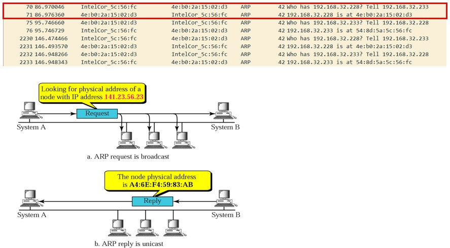
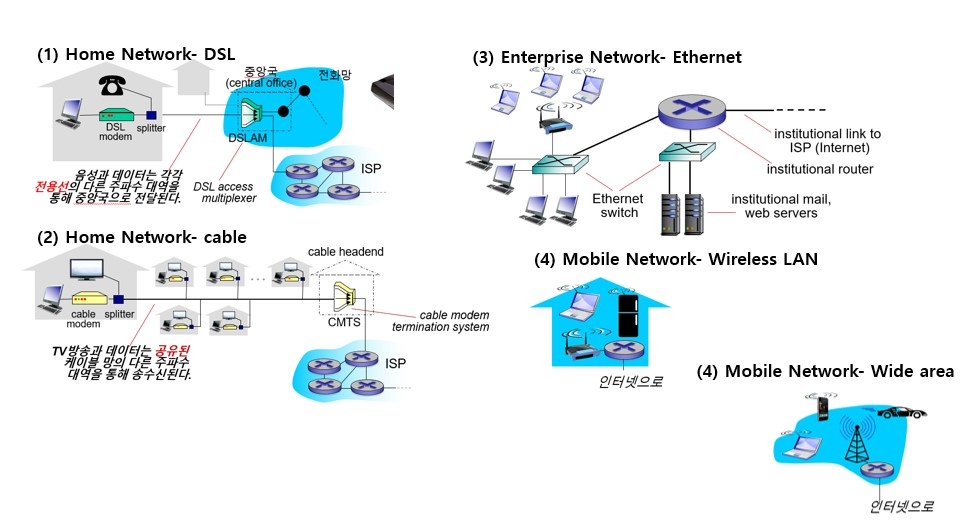
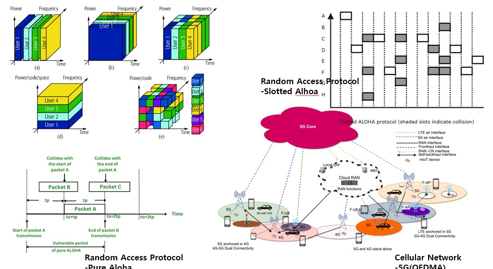

Link & Physical Layer: ARP, Access Point, Mobile
"local -> dankook.ac.kr" Wireshark Packet Capture- ARP 
Physical Access of 4 types

Mobile Communication- TDMA/FDMA/CDMA/OFDMA, Random Access Protocol 